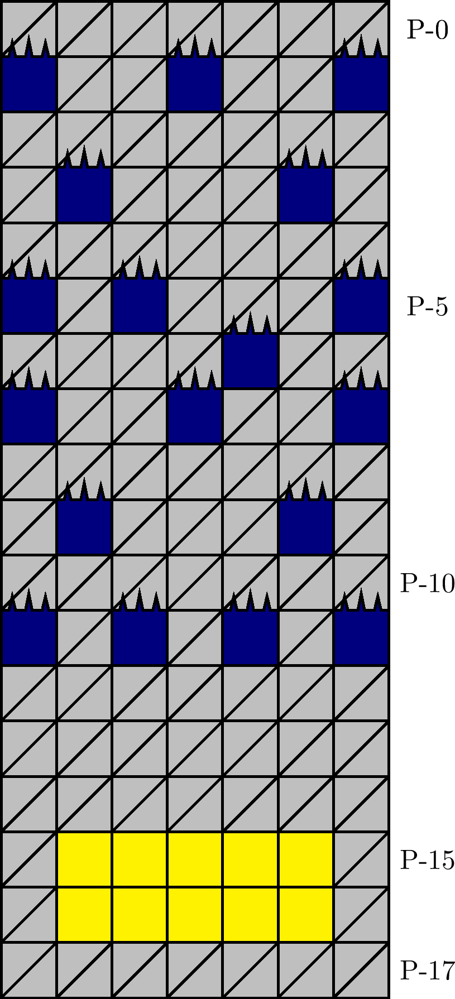

一般指針
エリア・浮針

指針
浮針は，直下掘りを基本として潜行し，ザクロを取得します．
解説
浮針とは，図 3.2.4.1 のエリアを指します． 200 m型の 82 行目に確率で出現します． P-1 行目の針の配列によって同定されます．
図 3.2.4.1 の黄色の列のいずれか一つに，図 3.2.4.2. のパターンが出現します．
エリア内には塊が出現することがあります．また，どの位置からエリアに進入したとしても，直下傾向の経路は実質的に一意的です．ザクロパターンの出現位置は P-10 行目の時点では視認困難なので， P-11 行目のどのマスを通過するとしても，平均潜行速度に確率的に有意な差は生じないと考えられます．エリアの通過は，都度直下傾向に従うものを原則とします．
P-17 行目は， 200 m型の 98 行目にあたります．このため，ザクロを一旦取得せずに 100 行目まで潜行した後でも，落下を待つことでザクロを容易に取得できます．この場合は，落下するその他のブロックによる圧迫に注意します．